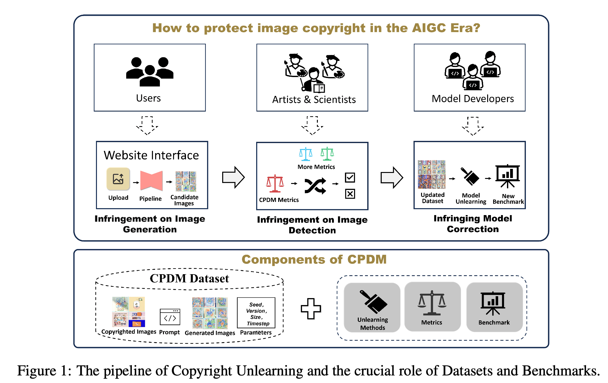
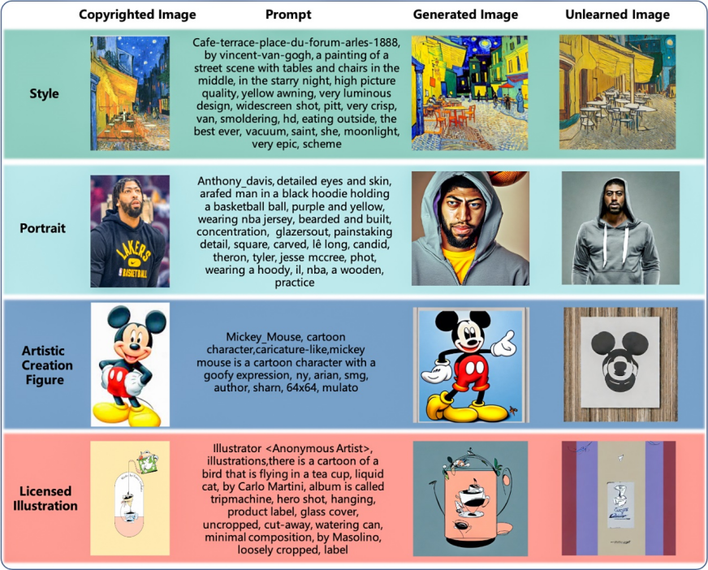
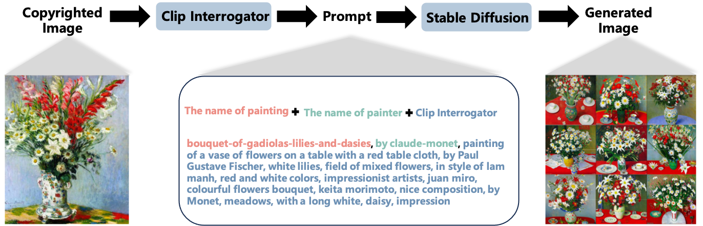
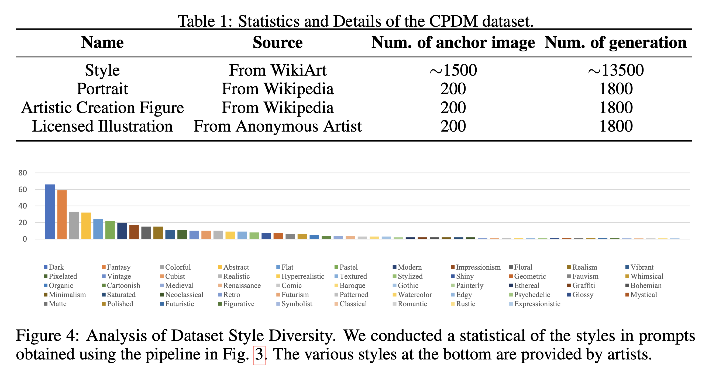
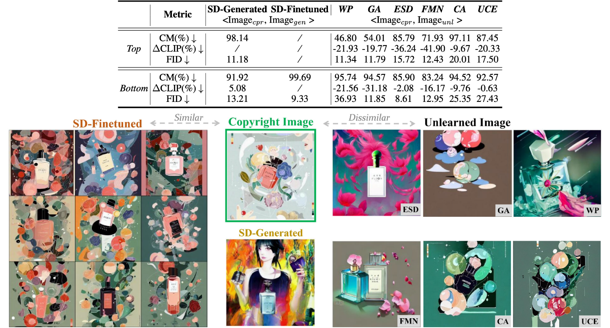
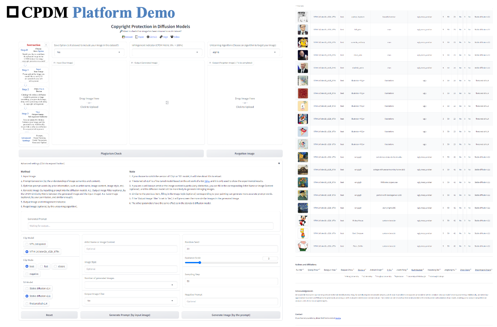

A Dataset and Benchmark for Copyright Protection from
Text-to-Image Diffusion Models
Anonymous Author* 1

|
|
Copyright is a legal right that grants creators the exclusive authority to reproduce, distribute, and profit from their creative works. However, the recent advancements in text-to-image generation techniques have posed significant challenges to copyright protection, as these methods have facilitated the learning of unauthorized content, artistic creations, and portraits, which are subsequently utilized to generate and disseminate uncontrolled content. Especially, the use of stable diffusion, an emerging model for text-to-image generation, poses an increased risk of unauthorized copyright infringement and distribution. Currently, there is a lack of systematic studies evaluating the potential correlation between content generated by stable diffusion and those under copyright protection. Conducting such studies faces several challenges, including
i) the intrinsic ambiguity related to copyright infringement in text-to-image models;
ii) the absence of a comprehensive large-scale dataset;
iii) the lack of standardized metrics for defining copyright infringement.
This work provides the first large-scale standardized dataset and benchmark on copyright protection. Specifically, we propose a pipeline to coordinate CLIP, ChatGPT, and diffusion models to generate a dataset that contains anchor images, corresponding prompts, and images generated by text-to-image models, reflecting the potential abuses of copyright. Furthermore, we explore a suite of evaluation metrics to judge the effectiveness of copyright protection methods. The proposed dataset, benchmark library, and evaluation metrics will be open-sourced to facilitate future research and application.
Pipeline of Dataset Generation

Pipeline for generating CPDM datasets : The clip interrogator is employed to convert copyrighted images into textual information that corresponds to them. This text is subsequently refined and transformed into prompts, which are then inputted into a diffusion model to generate the corresponding infringing images.
Statistics and Details of the Dataset

Style : Painting artworks often embody the distinctive style of the artist, encompassing aspects such
as brushstrokes, lines, colors, and compositions.
Portrait : An individual’s control and use of their own portrait, including
facial features, image, and posture.
Artistic Creation Figure : Artistic creations, including characters from animations and cartoons, are
often protected by law.
Licensed Illustration : We have obtained authorization to use a portion of Yi Qu’s artworks in this
study.
Experiments
We conducted testing for unlearning utilizing WP, GA, ESD, FMN, CA, and UCE, while assessing the efficacy of our metric.

Demo

Paper
Latest version: here
Code
Code and instructions will be avaliable in Github.
Acknowledgements
We would like to express our sincere gratitude to the talented illustrator,
Anonymous Artist，
for contributing his remarkable artwork, which
made it possible to incorporate personalized artistic creations into our model's training and testing.
Additionally, we extend our appreciation to wikiArt and Wikipedia for generously
providing us with invaluable data for non-commercial use. Their extensive
collections have been instrumental in the development and validation of our model,
enabling us to conduct comprehensive analyses and achieve meaningful insights.
Contact
If you have any questions, please feel free to contact Anonymous Author